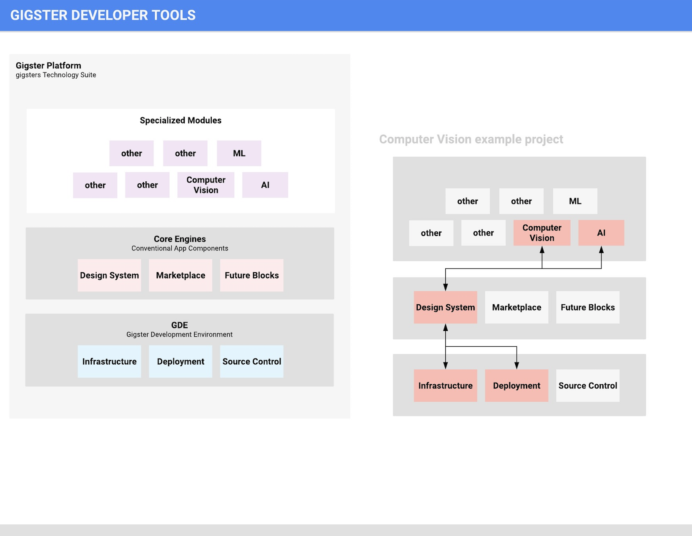
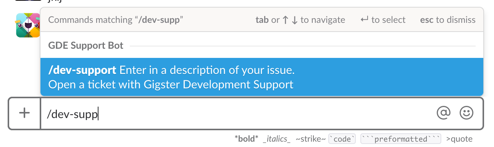

Introduction
{P0}
This is a system of reusable code components that sit within a common framework and atop standardized deployment infrastructure.
Engines act as a layer of abstraction over open source to drive a virtuous cycle of reuse, quality, developer productivity and velocity. Via templates, engines also provide for enterprise grade pre-built solutions to commonly encountered problems.
The entire system is intended for use by gigsters for building, deploying and running intelligent enterprise applications (web, mobile and machine learning applications).
--> What problems does this allow users to solve? or what does this framework capable for or should be used for?
--> comparison to other frameworks to give context and fast mind mapping
Version
{P2}
You should have this specific version (what number and hyperlink please) and you will need --> what is the current version? date it was updated? version number
Overview
--> why was this framework created? --> what are all the pieces involved?

see and improve th LucidChart of this placeholder diagram here: GDT overview diagram(https://www.lucidchart.com/invitations/accept/f92cf988-641c-48f5-bd9b-636028f78c1d)
Fundamentals
{P1}
--> Jerome please add his criteria of fundamentals that he presented to the Alpha-Squad
--> please embed Jeromes video: video currently stored on googledrive
Architecture
{P2} --> what is the overview of how this was created? maybe and architecture diagram?
Putting Engines on a Gig
What does it mean to put engines on a gig?
Developers use a command line interface to access the engines framework Modules from the catalog are pulled into the project using a configuration file The project is deployed on GDE from the command line interface
Quick Glossary of Terms
GDE
Gigster Developer Environments. A system for managing local, cloud environments and deployments. Currently used by gigsters to manage their environments and deploy their projects to AWS.
Key Technologies
Docker, Kubernetes, AWS. Will ultimately support Google and Azure.
Framework
A wrapper over the underlying open source application development and machine learning frameworks used by developers to build out applications.
Supported frameworks
Backend: Loopback, Frontend: React, React Native Design: Gigster Design System
Modules
Code representing atomic units of functionality. Modules allow for common pieces of functionality to be implemented quicker than starting from scratch. They can be configured via specific options and they expose methods and APIs for commonly implemented tasks. Developers take these building blocks and extend them as needed or call them from custom code. Modules can be backend, frontend or design focused. Backend modules often expose HTTP endpoints that frontend modules can consume. Frontend modules consist of code and views that consume backend modules. They can be fully custom built by gigster but will frequently be thin or thick wrappers around open source code. Modules come with unit tests and documentation out of the box and are expected to be higher quality and better maintained than any open source dependencies they are built from. Backend examples are: authentication, search, payments. Frontend examples are: forms, calendar UI examples: buttons, input fields
Templates
A collection of modules as well as glue code that together constitute functionality for a commonly occurring type of project. Templates are intended to be starting points for client solutions. Currently the glue code is minimal but in the future, there will be templates that are more product like and have a default baseline level of end-user utility out of the box. Templates can have frontend, backend or design modules or a combination of all of these. Examples → Talent marketplace, Social network Currently, a template is referred to as an “Engine” when it is considered in the context of the layers below it -- as part of a coherent framework sitting on top of standard infrastructure
CLI
A command line interface used by developers to access and interact with the overall engine system. Developers issue commands to set up templates, add modules, generate code from configuration and to deploy to GDE.
Getting Started
{P0}
--> How should a user get started? --> What are the steps needed to get up and running in less than 1 hour?
--> Overview: what will a user be doing in this section? What will they accomplish at the end?
Set up
Prerequisite
--> What does a person need (tools/frameworks/versions) to be able to get up and running?
Update the CLI
Step 1
--> examples please
Step 2
--> examples please
Step 3
--> examples please
CLI
{P1}
The Command Line Interface (CLI) supports the key commands.
--> What is the Command Line Interface? --> What does it do? --> When would I use such a thing? --> Why should I care?
--> for each section please provide: --- --> What does this do? --- --> How do I do this? (provide code example please) --- --> When do I use this?
see more info here: github catalog (if you do not have access please slack @sam to request access)
init
init -- used to initialize a project e.g. gig init marketplace would initialize a marketplace template.
const kittn = require('kittn');
let api = kittn.authorize('meowmeowmeow');
generate
generate -- used to generate code for a project as specified in the yaml file
provision
provision -- used to provision the required resources on GDE
deploy
deploy -- used to deploy to GDE
Modules - Backend
{P1}
Admin
Backend functionality for common create, read, update, delete operations by an admin on data defined in the YAML file
Authentication
Backend code which supports login, logout, set, change, and reset password, and email verification. It also supports OAUTH provider-based authentication options like Facebook, Google, Twitter, LDAP auth.
Fileupload
Backend code to allow for the uploading, retrieval, and deletion of files. Currently supports local and Amazon S3 storage, but can be customized with a small amount of code to support Azure, Google Cloud, Openstack, and Rackspace storage.
Search
Backend code that enables search on models specified in the yaml file using ElasticSearch. This code supports use cases like updating the ElasticSearch Index upon creation or deletion of entries from a model. Currently supports full text search across all fields.
Stripe payments
Backend API for supporting Stripe payments and a Gigster coupon solution. Stripe actions supported include performing transactions, creating customers and saved cards stored at Stripe, managing cards, and setting default cards.
Modules - Frontend
{P1}
Admin
Frontend for an admin panel that can be auto-generated based on data specified in the yaml file
Chat
Frontend code that connects to firebase for powering realtime messaging. It comes with an html view and requires firebase authentication to keep identities for the
Design System
see more about the Booster Design Kit
Booster Design Kit (BDK) is a library of UI components, app patterns and style guides packaged in a living Sketch document. It is everything you need to improve your design process: smarter defaults, overridable components and auto-generated guides.
Marketplace frontend demo
Front-end for the marketplace client-solution. Specifically, this generates a frontend for a services marketplace featuring a search page for talent and a profile detail page
Modules - Infastructure
{P1}
General infastrucure modules see more about these modules here at https://github.com/liquidlabs-co/gig-catalog
Module A
--> what is this module? what does it do? when should someone use it? --> example code please
Module B
--> any aditional modules we need to add here? --> example code please
GDE
for all and any info about the Gigster Developer Environment please see here: GDE github
Tutorials of Templates
{P1}
--> what are templates and how will people utilize them?
A collection of modules as well as glue code that together constitute functionality for a commonly occurring type of project. Templates are intended to be starting points for client solutions. Currently the glue code is minimal but in the future, there will be templates that are more product like and have a default baseline level of end-user utility out of the box. Templates can have frontend, backend or design modules or a combination of all of these.
Examples → Talent marketplace, Social network
Currently, a template is referred to as an “Engine” when it is considered in the context of the layers below it -- as part of a coherent framework sitting on top of standard infrastructure
In order to get up to speed with this framework it woud be hlepful to work through a tutorial in order to gain the foundations.
Marketplace
Two flavors supported -- goods and services Upon calling gig init marketplace, the developer is prompted to select what kind of marketplace as well as other options to customize the app To bootstrap each type of marketplace, the yaml files are pre-configured with the appropriate data models for each type and the above backend modules
Marketplace Tutorial
See the Marketplace tutorial github tutorial
Build a Loopback API Tutorial
See the GDT - Build a Loopback API tutorial here googledocs of tutorial
Contributing to the Catalog
{P2} --> How can people add to the catalog? --> Why would they want to add to the catalog? What gain or social capital does that give them?
Gigster offers an ever growing suite of Gigster Development Tools. seem more on adding modules to the gigster reusable code catalog here: googledoc on how to add to catalog
Testing
{P2}
--> How should someone run tests? --> different types of tests? when you would want to run each type of test? --> example code
Getting Help
--> Where and what kind of help can someone expect to get? --> How and when should someone utilize /dev-support --> how long and who will be responding
/dev-support
The main method for recieving support is through the /dev-support in slack which will have a dev member of Gigster HQ respond promptly.
In any private channel, type in /dev-support and a clear description of the problem you need help with. A member of gigster HQ support will respond as soon as possible.

Authentication EXAMPLE
To authorize, use this code:
require 'kittn'
api = Kittn::APIClient.authorize!('meowmeowmeow')
import kittn
api = kittn.authorize('meowmeowmeow')
# With shell, you can just pass the correct header with each request
curl "api_endpoint_here"
-H "Authorization: meowmeowmeow"
const kittn = require('kittn');
let api = kittn.authorize('meowmeowmeow');
Make sure to replace
meowmeowmeowwith your API key.
Kittn uses API keys to allow access to the API. You can register a new Kittn API key at our developer portal.
Kittn expects for the API key to be included in all API requests to the server in a header that looks like the following:
Authorization: meowmeowmeow
Kittens EXAMPLE
Get All Kittens
require 'kittn'
api = Kittn::APIClient.authorize!('meowmeowmeow')
api.kittens.get
import kittn
api = kittn.authorize('meowmeowmeow')
api.kittens.get()
curl "http://example.com/api/kittens"
-H "Authorization: meowmeowmeow"
const kittn = require('kittn');
let api = kittn.authorize('meowmeowmeow');
let kittens = api.kittens.get();
The above command returns JSON structured like this:
[
{
"id": 1,
"name": "Fluffums",
"breed": "calico",
"fluffiness": 6,
"cuteness": 7
},
{
"id": 2,
"name": "Max",
"breed": "unknown",
"fluffiness": 5,
"cuteness": 10
}
]
This endpoint retrieves all kittens.
HTTP Request
GET http://example.com/api/kittens
Query Parameters
| Parameter | Default | Description |
|---|---|---|
| include_cats | false | If set to true, the result will also include cats. |
| available | true | If set to false, the result will include kittens that have already been adopted. |
Get a Specific Kitten
require 'kittn'
api = Kittn::APIClient.authorize!('meowmeowmeow')
api.kittens.get(2)
import kittn
api = kittn.authorize('meowmeowmeow')
api.kittens.get(2)
curl "http://example.com/api/kittens/2"
-H "Authorization: meowmeowmeow"
const kittn = require('kittn');
let api = kittn.authorize('meowmeowmeow');
let max = api.kittens.get(2);
The above command returns JSON structured like this:
{
"id": 2,
"name": "Max",
"breed": "unknown",
"fluffiness": 5,
"cuteness": 10
}
This endpoint retrieves a specific kitten.
HTTP Request
GET http://example.com/kittens/<ID>
URL Parameters
| Parameter | Description |
|---|---|
| ID | The ID of the kitten to retrieve |
Delete a Specific Kitten
require 'kittn'
api = Kittn::APIClient.authorize!('meowmeowmeow')
api.kittens.delete(2)
import kittn
api = kittn.authorize('meowmeowmeow')
api.kittens.delete(2)
curl "http://example.com/api/kittens/2"
-X DELETE
-H "Authorization: meowmeowmeow"
const kittn = require('kittn');
let api = kittn.authorize('meowmeowmeow');
let max = api.kittens.delete(2);
The above command returns JSON structured like this:
{
"id": 2,
"deleted" : ":("
}
This endpoint deletes a specific kitten.
HTTP Request
DELETE http://example.com/kittens/<ID>
URL Parameters
| Parameter | Description |
|---|---|
| ID | The ID of the kitten to delete |
Errors
The Kittn API uses the following error codes:
| Error Code | Meaning |
|---|---|
| 400 | Bad Request -- Your request is invalid. |
| 401 | Unauthorized -- Your API key is wrong. |
| 403 | Forbidden -- The kitten requested is hidden for administrators only. |
| 404 | Not Found -- The specified kitten could not be found. |
| 405 | Method Not Allowed -- You tried to access a kitten with an invalid method. |
| 406 | Not Acceptable -- You requested a format that isn't json. |
| 410 | Gone -- The kitten requested has been removed from our servers. |
| 418 | I'm a teapot. |
| 429 | Too Many Requests -- You're requesting too many kittens! Slow down! |
| 500 | Internal Server Error -- We had a problem with our server. Try again later. |
| 503 | Service Unavailable -- We're temporarily offline for maintenance. Please try again later. |